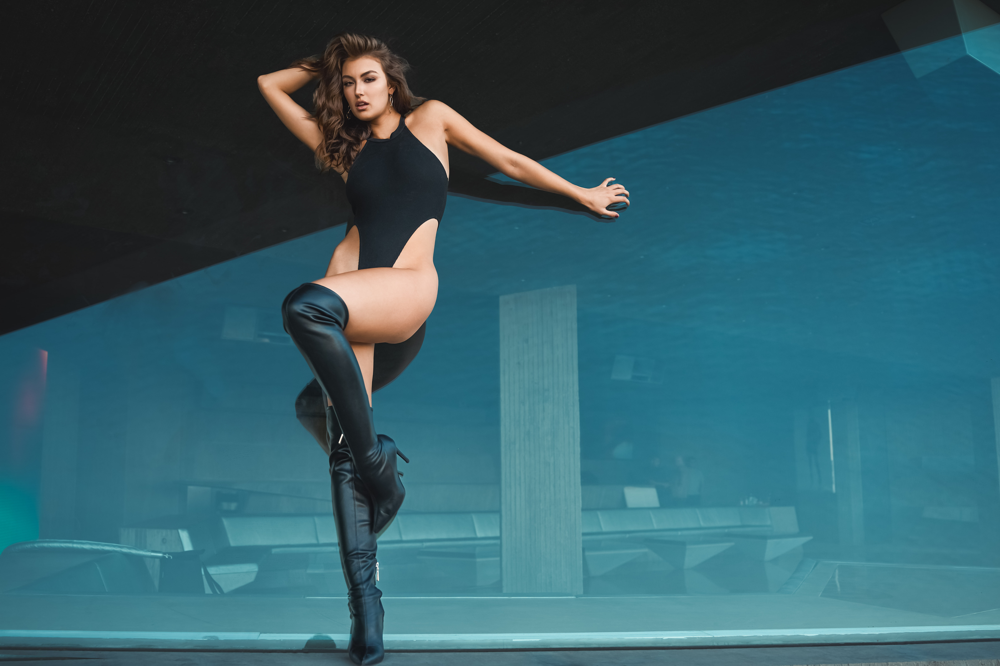

Inside the Sheats–Goldstein House, everything is intentional — the angles, the materials, the way the sky slips into the room without asking permission.
Award-winning scientist, inventor, model, actor, and influencer who challenges stereotypes by combining beauty and brains.
The Sheats–Goldstein House is one of Los Angeles’ most iconic architectural landmarks — cinematic, intense, and unapologetically modern. Rachel brought her own narrative to it: calm in the chaos, elegance in the concrete. The shoot felt less like photography and more like documenting a conversation between two masterpieces.